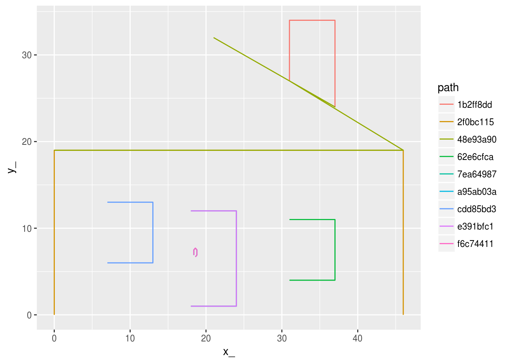
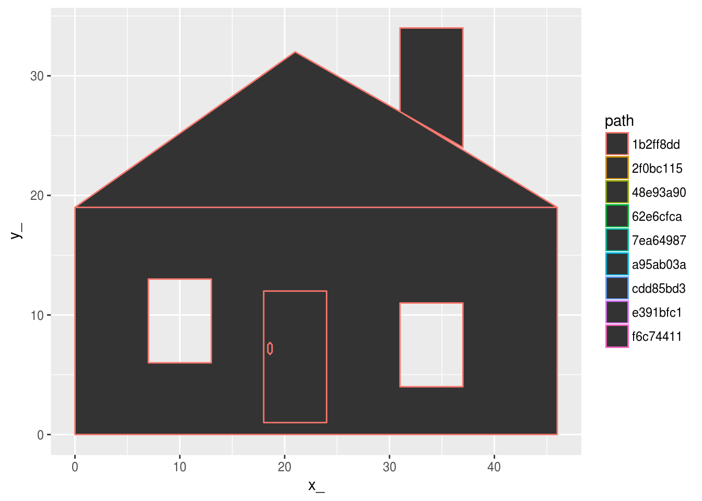

The goal of scdb is to provide a back-end for the sc project.
This is a general common-form data structure for complex hierarchical data.
Installation
You can install scdb from github with:
# install.packages("devtools")
devtools::install_github("hypertidy/scdb")Example
This is a basic example which converts a simple features object to a database, then recreates that object in a very scaleable, flexible and extensible way.
library(scdb)
data(hpoly)
(pdb <- write_db(hpoly))
#> creating temp database /tmp/RtmpohNrIR/file4d733505e321.sqlite
#> src: sqlite 3.19.3 [/tmp/RtmpohNrIR/file4d733505e321.sqlite]
#> tbls: object, path, path_link_vertex, sqlite_stat1, sqlite_stat4, vertexNow explore the objects available in the database.
library(dplyr)
#>
#> Attaching package: 'dplyr'
#> The following objects are masked from 'package:stats':
#>
#> filter, lag
#> The following objects are masked from 'package:base':
#>
#> intersect, setdiff, setequal, union
(obj <- tbl(pdb, "object"))
#> # Source: table<object> [?? x 3]
#> # Database: sqlite 3.19.3 [/tmp/RtmpohNrIR/file4d733505e321.sqlite]
#> rownumber_ feature object
#> <int> <chr> <chr>
#> 1 1 wall dee12e47
#> 2 2 roof 989ee894
#> 3 3 door 6a52cfe2There are three objects, and each has a long ID object_, as well as other metadata.
Using joins we can access the other data in the decomposed tables.
(p <- tbl(pdb, "vertex") %>% inner_join(tbl(pdb, "path_link_vertex")) %>% inner_join(tbl(pdb, "path")))
#> Joining, by = "vertex_"
#> Joining, by = "path"
#> # Source: lazy query [?? x 9]
#> # Database: sqlite 3.19.3 [/tmp/RtmpohNrIR/file4d733505e321.sqlite]
#> x_ y_ vertex_ path ncol type subobject object
#> <dbl> <dbl> <chr> <chr> <int> <chr> <int> <chr>
#> 1 0 0 82a53987 2f0bc115 2 MULTIPOLYGON 1 dee12e47
#> 2 0 0 82a53987 2f0bc115 2 MULTIPOLYGON 1 dee12e47
#> 3 0 19 217d4951 2f0bc115 2 MULTIPOLYGON 1 dee12e47
#> 4 0 19 217d4951 48e93a90 2 MULTIPOLYGON 1 989ee894
#> 5 0 19 217d4951 48e93a90 2 MULTIPOLYGON 1 989ee894
#> 6 46 19 aef2b636 2f0bc115 2 MULTIPOLYGON 1 dee12e47
#> 7 46 19 aef2b636 48e93a90 2 MULTIPOLYGON 1 989ee894
#> 8 46 0 18758cad 2f0bc115 2 MULTIPOLYGON 1 dee12e47
#> 9 7 6 2f483e9b cdd85bd3 2 MULTIPOLYGON 1 dee12e47
#> 10 7 6 2f483e9b cdd85bd3 2 MULTIPOLYGON 1 dee12e47
#> # ... with more rows, and 1 more variables: ncoords_ <int>In a real case we would wrap the chained joins within a list-column in obj or similar trick, and use the database more cleverly to only expand out the data we need for each object. But also note there’s no collect statement, big_tab is still a promise that the database will do the work only when we really need it to.
library(ggplot2)
collect(p) %>% ggplot(aes(x = x_, y = y_, group = path, colour = path)) +
geom_path()
library(ggpolypath)
collect(p) %>% ggplot(aes(x = x_, y = y_, group = path, colour = path)) +
ggpolypath::geom_polypath()
WIP
A future version will provide methods for sc_coord, sc_path, PATH and PRIMITIVE that can work more transparently from a database. In particular this will allow building a completely arbitrary data structure of any size in a database, that can then be streamed into R for analysis or visualization in any of the graphics systems.
Please note that this project is released with a Contributor Code of Conduct. By participating in this project you agree to abide by its terms.